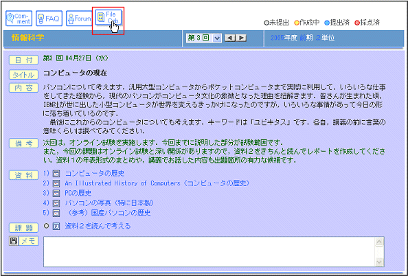
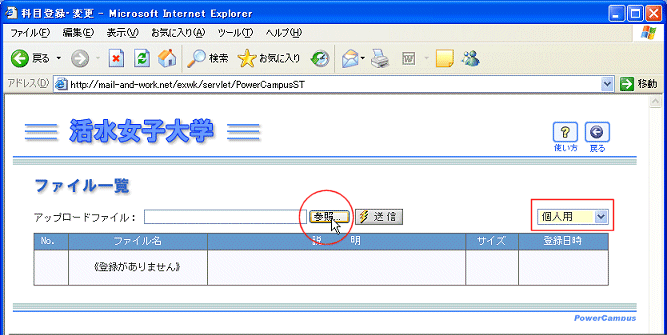
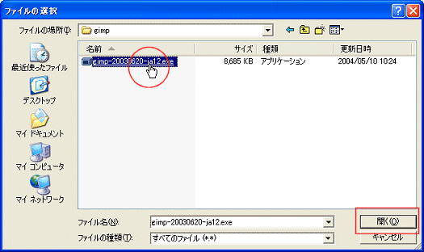
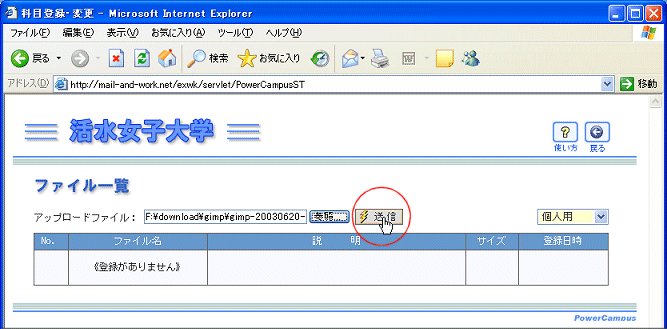
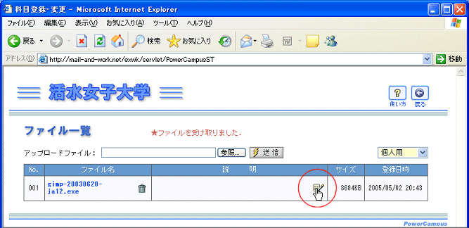
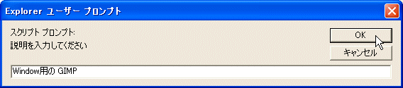
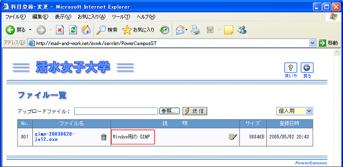

ファイルキャビネットの使い方
ファイルキャビネットにファイルを保管する
ファイルキャビネットからファイルを取り出す
クラス用キャビネットをアクセスする
ファイルキャビネットは
ファイルの保管庫
です．個人的なファイルを保管する
個人用キャビネット
と，授業で利用する
授業用キャビネット
からなります．ファイルキャビネットに保管したファイルは，ウェブブラウザさえあれば，大学でも，自宅でも，出し入れ可能です．なお，個人用キャビネットには読み書き可能ですが，講義で利用されるクラス用キャビネットは読み出し専用になっています．
---------------------------------
ファイルキャビネットにデータを保管する
個人用キャビネットは，文字通り各学生のためのキャビネットです．学内LANのネットワークドライブよりも有利な点は，学外からもアクセスできることです．自宅でアップロードしておいて，大学でダウンロードして使うようなことが可能です．どんなファイルでも保管できますが，次の制限があります．
(1) 10MBを超える大きなファイルは格納できない
(2) 複数のファイルをアップロードするときでも，１個づつアップロードする
(3) キャビネットは有限なのでアップロードできる容量には限界がある
現在のところ，
ファイル名に漢字を使ったものは使えません
．
送信は可能ですが取り出せないという問題があります．漢字ファイル名は英数半角で付け直したものを送信してください．この問題は次のバージョンでは解決する予定です．
ここでは，個人用キャビネットにファイルを格納する方法を説明します
講義画面でファイルキャビネットボタンをクリックする

参照ボタンをクリックする
ファイルキャビネットは，最初は個人用キャビネットをアクセスする設定になっています．ファイルをアップロードするには参照ボタンをクリックしてください．

ファイルダイアログが開くので送信するファイルを選択する
送信するファイルのあるフォルダに移動し，目的のファイルを選択して開くをクリックします．

アップロードボタンをクリックする
ここで送信したのは8BMもある大きなファイルなので，送信完了までしばらく待ちます．

コメント作成ボタンをクリックする
アップロードしたファイルに説明を書いておくことができます．必須ではありませんができるだけ書くようにしておくとファイルの内容が分かりやすくなります．

記入ダイアログが開くので，説明を記入します．記入したらOKボタンをクリックしてください．

ファイル表示にコメントがつきました．



 現在のところ，
現在のところ， 講義画面でファイルキャビネットボタンをクリックする
講義画面でファイルキャビネットボタンをクリックする
 参照ボタンをクリックする
参照ボタンをクリックする
 ファイルダイアログが開くので送信するファイルを選択する
ファイルダイアログが開くので送信するファイルを選択する
 アップロードボタンをクリックする
アップロードボタンをクリックする
 コメント作成ボタンをクリックする
コメント作成ボタンをクリックする
 記入ダイアログが開くので，説明を記入します．記入したらOKボタンをクリックしてください．
記入ダイアログが開くので，説明を記入します．記入したらOKボタンをクリックしてください．